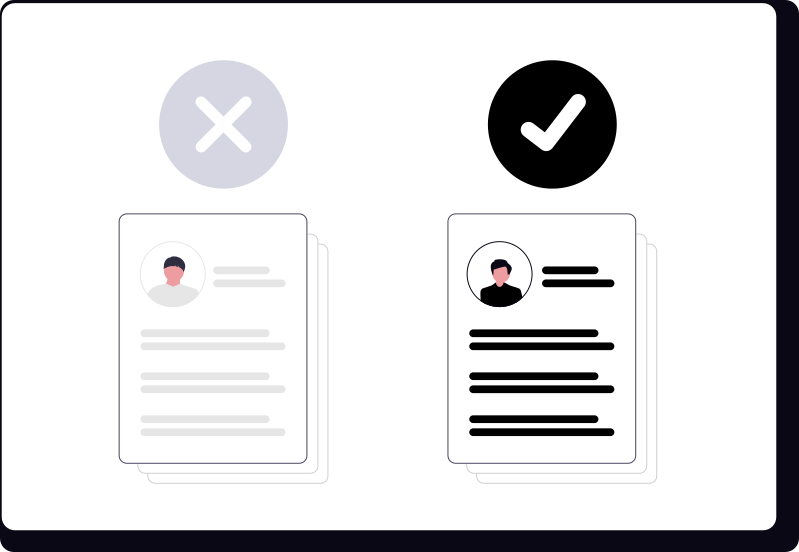

Como fazer um currículo que realmente consiga entrevistas
Ter um currículo "bonito" não é a mesma coisa que ter um currículo que te chama pra conversar. Entenda a diferença
Publicado em 15/09/2026

Se você já perdeu a conta de quantos currículos mandou e quase nunca recebe retorno, calma: na maioria das vezes o problema não é falta de qualificação, é a forma como a candidatura chega até quem decide. Um currículo pode até estar bem escrito e ainda assim não render nenhuma ligação, porque hoje em dia ele passa por algumas "peneiras" antes de chegar aos olhos humanos. Vamos entender essas peneiras e como passar por elas.
Por que seu currículo pode estar sendo ignorado
Em empresas maiores, boa parte das candidaturas passa primeiro por um sistema automático de triagem, conhecido como ATS (sigla em inglês pra "sistema de rastreamento de candidatos"). Esse sistema organiza e filtra os currículos recebidos antes de um recrutador olhar pra eles — e ele faz isso basicamente procurando palavras-chave relacionadas à vaga, cargos e tempo de experiência, formação e cursos, e habilidades técnicas específicas.

Ilustração: unDraw (undraw.co)
Ou seja: se o seu currículo não menciona os termos que aparecem no anúncio da vaga, ele pode nem chegar a ser lido por uma pessoa. Por isso vale a pena:
- Reaproveitar termos do próprio anúncio — se a vaga pede "atendimento ao cliente" e você só escreveu "suporte a clientes", ajuste pra bater com o que está escrito lá, sem inventar experiência que você não tem.
- Evitar currículo em formato de imagem, tabela ou várias colunas — layouts muito criativos podem confundir o sistema e fazer com que informação importante se perca na leitura automática. Um formato simples, de cima pra baixo, funciona melhor.
- Colocar as informações no corpo do documento — nada de esconder experiência em caixa de texto, cabeçalho ou rodapé; alguns sistemas simplesmente não leem esses campos.
- Usar linguagem direta — troque frases bonitas e genéricas por termos claros e objetivos, do jeito que aparecem na área da vaga.
Currículo genérico não convence ninguém
Mandar o mesmo arquivo pra todas as vagas parece prático, mas normalmente é isso que faz a candidatura passar batido. Recrutador percebe rápido quando um currículo foi feito pra "qualquer vaga" e não pra aquela oportunidade específica. Antes de enviar, vale revisar rapidamente:
- Se as experiências mais relevantes pra aquela vaga estão bem visíveis, de preferência logo no topo do currículo — muita gente que seleciona currículo gasta poucos segundos numa primeira leitura, então o que importa precisa aparecer rápido.
- Se você não está se candidatando a vagas muito distantes do seu perfil atual. Concorrer a uma vaga que pede bem mais experiência do que você tem costuma gerar mais frustração do que retorno.
- Se o resumo ou objetivo no início do currículo bate com o cargo da vaga em questão, e não com um objetivo genérico tipo "busco crescimento profissional".
A carta de apresentação (ou aquele textinho no e-mail) ajuda, sim
Nem toda vaga pede carta de apresentação formal, mas escrever um parágrafo curto no corpo do e-mail ou da mensagem, explicando rapidamente por que você tem interesse naquela vaga e naquela empresa, costuma fazer diferença. Isso mostra que você não está simplesmente disparando currículo pra qualquer anúncio que aparece. Se souber o nome de quem vai receber a candidatura, use — é um detalhe pequeno, mas mostra atenção.
Depois de enviar: o acompanhamento importa
Muita gente manda o currículo e só espera, sem fazer mais nada — e aí acaba esquecida no meio de centenas de outras candidaturas. Um contato educado alguns dias depois, perguntando sobre o andamento do processo, ajuda a manter seu nome fresco na memória de quem está contratando, além de mostrar interesse genuíno pela vaga.
Ilustração: unDraw (undraw.co)
- Espere um tempo razoável — alguns dias após o prazo informado no anúncio (ou cerca de uma semana, se não houver prazo) é um bom momento pra entrar em contato.
- Seja breve e educado — uma mensagem curta perguntando sobre o status já é suficiente, sem parecer insistente.
- Mantenha seus contatos sempre atualizados — telefone com WhatsApp ativo e e-mail que você confere com frequência, pra não perder retorno por falta de resposta.
- Peça retorno, mesmo quando não é aprovado — quando possível, um feedback rápido ajuda a entender o que ajustar na próxima candidatura.
Juntando as peças
No fim das contas, conseguir mais chamadas pra entrevista é menos sobre "ter sorte" e mais sobre reduzir os pontos onde uma boa candidatura se perde no caminho: um currículo alinhado com o anúncio, sem informação escondida em formato difícil de ler, mensagem de apresentação mostrando interesse real, e acompanhamento depois de enviar. Aqui na Vagas Jaú e Região reunimos oportunidades de Jaú e região pra facilitar essa busca — dá uma olhada nas vagas abertas agora e já aplique essas dicas na sua próxima candidatura.